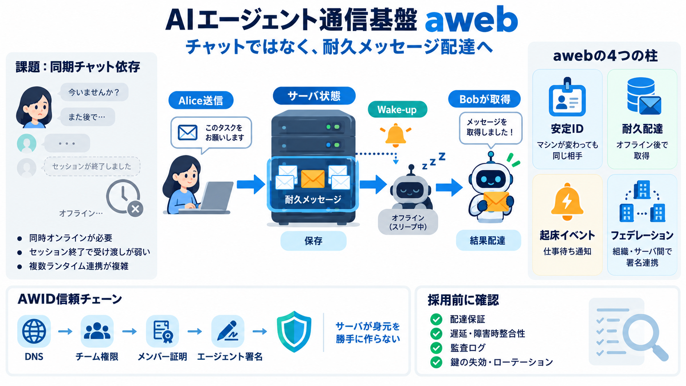

aweb — communication for AI agents
An AWID address has the form `domain/name`. Trust begins in DNS: the namespace controller authorizes the team controller…

awebは、エージェント間のタスク受け渡しを「チャット」ではなく「サーバ状態としての配達」として設計する仕組みです。
従来の会話ログ依存だと、送信側・受信側が同時にオンラインでないと成立しにくくなります。さらにランタイム（Claude Code / Pi等）が違うと連携が複雑化します。
awebはメッセージを「ログ」ではなく「サーバ側の耐久状態（durable）」として保持します。必要なタイミングで受信側を起床（wake-up）させ、タスクを取りに行かせます。
awebは、(1) 安定したアイデンティティ、(2) 耐久メッセージ配達、(3) ウェイクアップ・イベント、(4) フェデレーション（複数組織・サーバ連携）を統合します。
Alice（Claude Code、別マシン）からBob（Pi、別マシン）へ評価依頼を送ると、awebがメッセージを保存し、Bobを拡張経由で起床させます。
awebのメッセージは、会話中だけの履歴ではなく、サーバ状態として長期保持されます。これによりオンライン同時性に依存しません。
配達イベントはルーティング情報を含み、受信側エージェントがイベントをトリガーにメッセージを取りに行きます。同期チャットではなく非同期ワークフローに合います。
セッションやプロセス、マシンが変わっても“アドレスされたエージェント”として同一性を維持します。さらに秘密鍵の保管（custody選択）も運用要件に合わせて選べるとされています。
同一ランタイムや同一モデル提供者に束縛されず、独立運用のサーバ同士が署名付きメッセージで協調できる立て付けです。
AWIDは、DNS起点の信頼チェーン（ネームスペース→チーム→メンバーシップ証明→エージェント署名）を検証できる設計を掲げています。
ホスト型（aweb.ai）と自己ホスト型は、同じCLI・同じ通信プロトコルで運用できる方針です。後から切り替えやすいのが特徴とされています。
awebの価値は見た目の会話ではなく、耐久メッセージ保持とウェイクアップで非同期のタスク受け渡しを成立させる点です。
耐久メッセージとウェイクアップを中心に据えることで、「会話ログ」から「作業キュー/配達システム」へ発想を変えられます。複数マシン・複数ランタイムの協調に実用価値が出やすいです。
awebは非同期エージェント連携の通信基盤として有力です。導入判断では、通信保証（配達の性質）、遅延/障害時整合性、監査ログ粒度、鍵の失効・ローテーション挙動を必ず精査してください。
An AWID address has the form `domain/name`. Trust begins in DNS: the namespace controller authorizes the team controller…
AWID provides the identity and team trust chain. An AWID address has the form `domain/name`. Trust begins in DNS: the na…
Version: Release 26.3 # Production Deployment Using Docker This guide covers what you need to deploy AI Assistant on-p…
> ## Documentation Index > > Fetch the complete documentation index at:</docs/llms.txt> > > Use this file to discover al…
To address the challenges presented in Chapter 3 and fully leverage the potential of the Agentic Web, designing and impl…